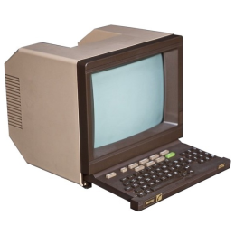

A new world of possibilites
Minitel used terminals consisting of a text-based screen, keyboard and modem. Simple graphics could be displayed using a set of predefined graphical characters. Aftermarket printers were available.[9] When connecting, the Minitel integrated modem generally dialed a special number connecting to a PAVI (Point d'Accès VIdéotexte, "videotext access point"). The PAVI transmitted information to the servers of the appropriate company or administration using the Transpac X.25 network. In France the most common dial number was "36 15", while "36 17" was used by more expensive services. Minitel services names were often prefixed with this number to identify them as such. Billboard ads at the time often consisted of nothing more than an image, a company name, and a "36 15" number; the fact that a Minitel service was being advertised was then clear by implication. Minitel used a half-duplex asymmetric data transmission via its modem. It downlinked at 1200 bit/s and uplinked at 75 bit/s. This allowed fast downloads, for the time. The system, which came to be known as "1275" was more correctly known as V.23. This system was developed solely for Minitel and its clones around the world. Technically, Minitel refers to the terminals, while the network is known as Teletel.The Minitel was a Videotex online service accessible through telephone lines, and is considered one of the world's most successful pre-World Wide Web online services. The service was rolled out experimentally in 1978 in Brittany and throughout France in 1982 by the PTT (Postes, Télégraphes et Téléphones; divided since 1991 between France Télécom and La Poste).[1] From its early days, users could make online purchases, make train reservations, check stock prices, search the telephone directory, have a mail box, and chat in a similar way to that now made possible by the Internet. In February 2009, France Telecom indicated the Minitel network still had 10 million monthly connections. France Telecom retired the service on 30 June 2012.